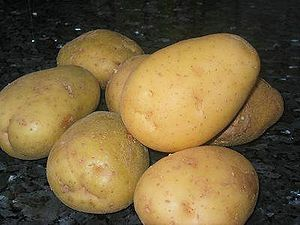

Campeonato de Contar Patatas
 De: La Frikipedia, la enciclopedia extremadamente seria.
De: La Frikipedia, la enciclopedia extremadamente seria.
Campeonato de elite de origen milenario que data del año 765288362783648732154862138974612389746 a.c. (Antes de mi Culo) cuando Geisporgiete Logaritmo inventó los números y buscaba algo que hacer con ellos.
Reglas
 De esto es lo que hay que contar.
Es un deporte que consiste en contar y contar patatas hasta determinar cuántas hay en el montón que te toca. Te dan un saco con 206 patatas y tienes que contarlas todas, meterlas en el saco y decir cuántas hay. El número nunca pasa de mil. De hecho, siemre hay 206. El que antes las cuente, gana.
Las reglas, como todo deporte de élite, han evolucionado a lo largo del tiempo, pero la esencia del deporte no se ha perdido en sus años de historia. De hecho, se descubrió que el jurado tenía que contar las patatas antes de empezar, para que ningun atleta haga trampa diciendo una cantidad errónea a los dos segundos de empezar y así ganar injustamente.
- En su segunda edición se prohibió el uso de la calculadora, el ábaco y otros instrumentos.
- También se prohibió el uso de básculas, balanzas y otros instrumentos parecidos, pues también ayudaban.
- En la 5ª edición Pitágoras fue el primer caso de doping de la historia, tras varios análisis y contraanálisis se le culpó de tener unos dedos muy hábiles y maneras para contar varias patatas a la vez en vez de una por una.
El Patatódromo
El espacio reservado para la celebración de dichos campeonatos se llama Patatódromo. Es un espacio grande donde las patatas de un atleta no se puedan mezclar con las de otro. El más antiguo y famoso es el “Patatódromo Lays&Rufles”, situado en un entorno de arena y planicie. Se construyen patatódromos en terrenos grandes cuyo desnivel no pase de medio grado.
El Campeonato en el presente
Debido a la historia de filósofos y matemáticos del mundo antiguo, hoy en día los griegos y los romanos dominan de manera regular los campeonatos debido a sus fórmulas matemáticas y a que calculan mentalmente todas las patatas antes de mirarlas.
La selección japonesa suele vencer también, debido a sus micronanominicalculadoras de bolsillo, que utilizan clandestinamente sin que el jurado pueda verlos.
Fechas a realizar el Campeonato
El Campeonato debe realizarse cada día 31 de Febrero. Durante los dos días anteriores, se entrenará a los atletas con pelotas de goma y se les entrenará la agilidad de los dedos con un tetris de bolsillo, aparte de que deberán someterse a una operación cerebral atontante para que olviden todas las fórmulas matemáticas que hayan aprendido y así cuenten las patatas de una en una.
Palmarés
- 1ªEdición: El profesor Frink, calculando en doce segundos y seis décimas el algoritmo neperiano de la antepenúltima cosecha de nabos elevado a la raíz cuadrada del número de microbios de un jamón, menos los litros de sustancia sustanciosa que hay que esnifar para obtener el mismo resultado que una patada giratoria de Jackie Chan. Así pudo calcular en tres segundos que había 206 patatas en el saco, y ganó.
- 2ªEdición: Herman Li contó las patatas en 42 micromilésimas de una vez, dado que tiene alrededor de 2.100to y pico dedos. La gente empezó a quejarse y a decir "¡Eso no se vale, puto mutante de 2.100to y pico dedos
+1 cuya parte no quiero mencionar Tocó un solo de 66666 ppm (patatas pulsadas por minuto) se los cargo a todos y se metio el premio por salva sea la parte.
- 3ªEdición: Un diseñador del Peugeot, sabiendo que el 206 es un modelo de esa marca de coche, así que dijo todos los números de los modelos y acertó de potra. La operación quitaba las matemáticas, pero no la memoria.
- 4ªEdición: Jose Luis Rodriguez Zapatero, que, cuando le ganaron los concursantes de la modalidad infantiloide, dio pena por lo tonto que era y le dieron el premio para que no se pusiera a llorar y patalear. Se intentó hacerle la operación, pero no había cerebro que atontar.
- 5ªEdición: Margarita Seisdedos, que usó sus seis dedos de cada mano para contar más rápido las patatas.
- 6ªEdición: Psicho Mantis, que esperó a que uno terminara de contar las patatas, le leyó la mente y dijo las que había (206, como siempre). Respecto a la operación atontante, la evitó haciendo que los médicos no se la hicieran mediante control mental, y luego hizo que certificaran que la habían hecho.
- 7ªEdición: Un friki con una máquina del tiempo que perdió en concurso, siguió contando las patatas, viajó atrás en el tiempo y le dijo a su yo del pasado la cantidad de patatas que había, y ganó.
- 8ªEdición: Alf, que despues de muchos entrenamientos, logro contarlas durante siete años, cuatro meses, dos días y seis décimas. Por suerte para él, era el unico inscrito ese año.
- 9ªEdición: Harry Potter, que con un hechizo que le habia enseñado Albaro Dumblendor para hacer trampa en sus examenes de matematicas magicas logro contar las 206 patatas y asi ganar el
maldito concurso.
- 10ªEdición: Wenceslao Carótido de la Petrogastria, que se enteró por un chivatazo de que había 206 patatas.
- 11ªEdición: Albaro Dumblendor que le habia hecho un hechizo a Harry para hacerle perder la memoria y asi lograr ganar.
- 12ªEdición: Julio Gomez Hernandez, que ganó legalmente. Vale, no tiene gracia, pero no queremos que el concurso coja mala fama.
¿Sabias que...
- ...siempre le ponen 206 patatas a cada concursante para que las cuente?
- ...nadie lo sabe?
- ...está prohibido usar objetos mágicos y/o prender fuego a los contrincantes?
- ...se cree que Albert Einstein hizo trampa utilizando su teoria de la relatividad?
- ...uno se durmió contando patatas igual que el que se duerme contando ovejas? Por dormirse, perdió.
- ...he inventado un cuchillo sin mango al que le falta la hoja?
- ...Alf sabia contar pero se hizo el
pelotudo que no sabia solo para ir de una maestra y cojersela por que tenia ganas a perder el tiempo
- ...yo sé decir patata sin juntar los labios?
- ...el 80% de las personas que leyeron esto trataron de decir patata sin juntar los labios?
- ...para decir patata sin juntar los labios hay que sacar la lengua y cerrar los labios para que la lengua actue como labio y asi poder decir la P?
- ...eso no lo sabias hasta que te lo he dicho yo?
- ...IP anónima es gilipollas?
Autor(es):
- Frikiman
- Roms
- ElInventor
- Nadaquever
- Mustisao
- Gjhuyn
- Agus 996
- ElInventor2
- Frikinorris
- Pepino-Man10
Frikipedia 2005-2016, Licencia
GFDL 1.2 - Extraído por FrikiLeaks